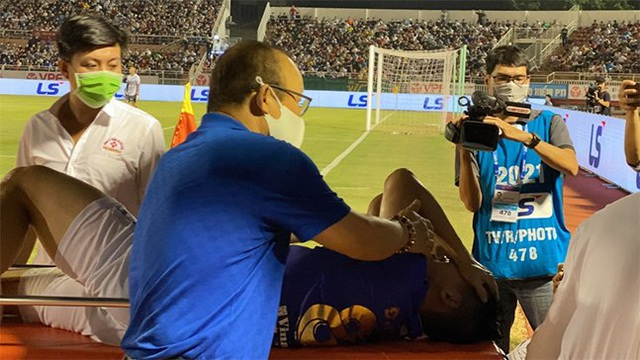
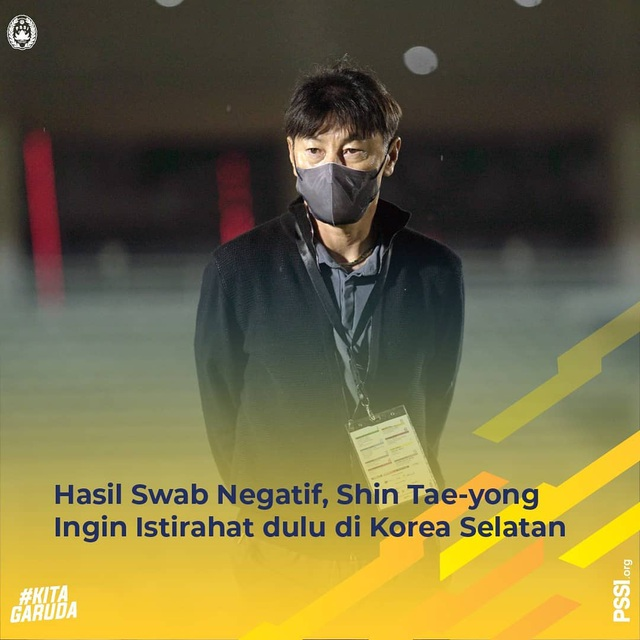
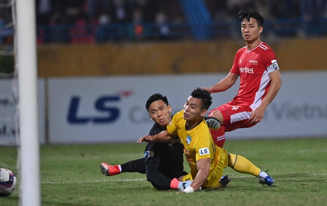
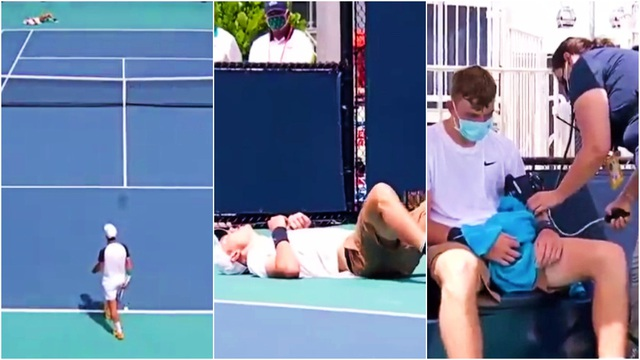
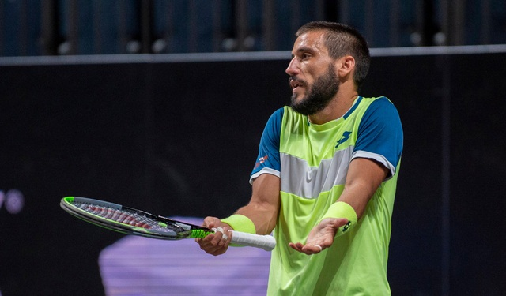

TRANG CHỦ
BÓNG ĐÁ TRONG NƯỚC
BÓNG ĐÁ CHÂU ÂU
TENNIS
BÓNG ĐÁ TRONG NƯỚC
Báo Hàn Quốc ca ngợi cách hành xử của HLV Park Hang Seo với Hùng Dũng

HLV Shin Tae-yong về Hàn Quốc, Indonesia lao đao trước trận gặp Việt Nam

Văn Thanh tuyên bố bất ngờ khi đối đầu Lee Nguyễn

TENNIS
Thần đồng quần vợt người Anh bị loại sớm ở giải Miami Open vì lý do bất ngờ

Ngôi sao tennis người Bosnia phủ nhận dọa giết trọng tài

Rafael Nadal từ chối tới Dubai thi đấu

BÓNG ĐÁ CHÂU ÂU
Sáng tỏ dần tương lai của Messi ở Barcelona

C.Ronaldo ra điều kiện cực khó để ở lại Juventus

Hà Lan thua sốc, Bồ Đào Nha và Pháp gây thất vọng

Báo tiếng Việt nhiều người xem nhất
Thuộc Bộ Khoa học Công nghệ
Số giấy phép: 06/GP-BTTTT ngày 03/01/2014